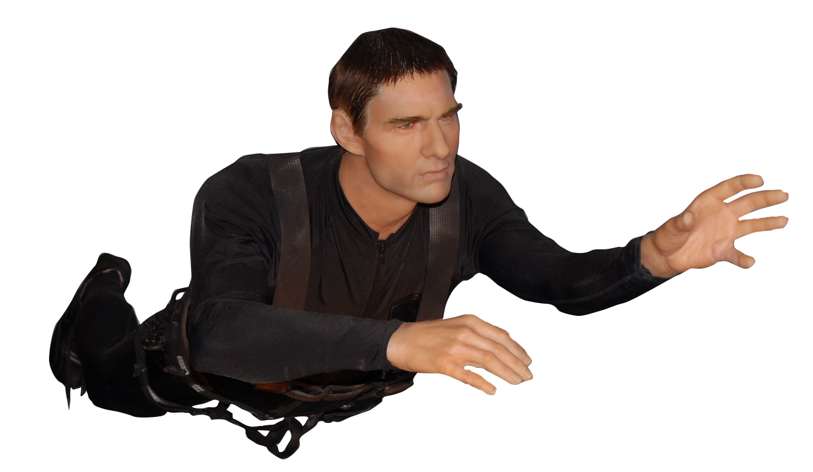
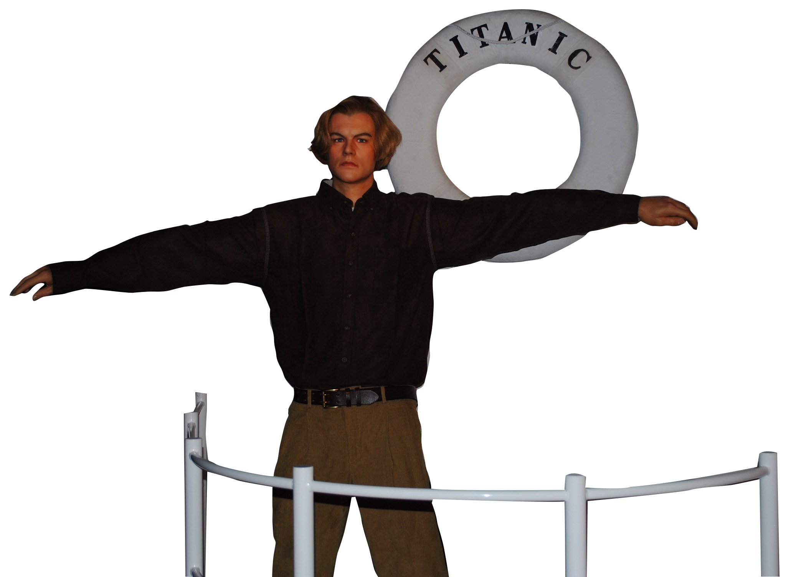

Titanic Museum

The facade of the museum
"Amid all of the kitsch and traffic that is Pigeon Forge stands a boat that looks quite familiar." - Trip Advisor user

There is a sculpture of the infamous iceberg at the side of the building.
"Many art critics argue that kitsch art is characterized by exaggerated sentimentality and melodrama." - " Lorenzo Pereira, Widewalls

"The detail of the entire tragedy is excellent and brings it to life to anyone who is familiar with the history. The costumes and actual artifacts were on display." - Trip Advisor user
Blake Jones Racing Center
Racecars, similar to the ones we played with as kids, are prominent decorative elements here.

There are many options for things to do including figure 8 racing, go-karts, and bumper cars.
"When I go on vacation from when I was a kid to now, I have always liked doing the go carts." - Trip Advisor user
Hollywood Wax Museum
You can sit next to Tom Hanks as Forest Gump on the recognizable bench.

At the front of the museum is a Mount Rushmore of old Hollywood actors.
"Cwynar is interested in how design and popular images work on our psyches, in how their visual strategies infiltrate our consciousness. In her book, Kitsch Encyclopedia (2013), she considers how familiar, sentimental images smooth over unpleasant realities, to cover up “the systems of control embedded within our social, economic, and political lives" - " Foxy Production (Sara Cwynar is an artist who is heavily inspired by kitsch)

Tom Cruise as seen in his Ethan Hunt role in "Mission Impossible" movies.
"Some of the wax figures bore little likeness to the people they were supposed to represent. It was fun to take pictures with the celebs you were familiar with" - Trip Advisor user
Leonardo DiCaprio in his role as Jack Dawson "The Titanic"

Tennessee country icon Dolly Parton is of course in here as well.
"Kitsch; art, objects or design considered to be in poor taste because of excessive garishness or sentimentality." - " Oxford Art Dictionary